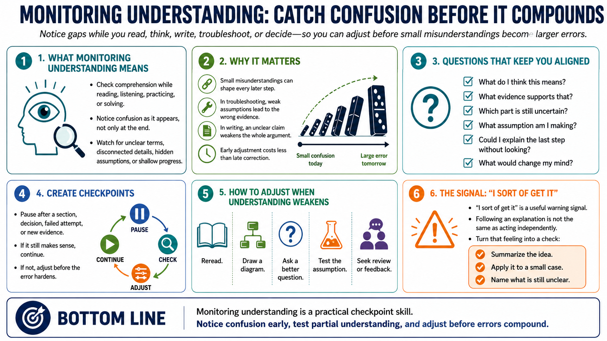

Monitoring Understanding in Real Time
Connecting to LMS... Progress: in progress

Narration
Monitoring understanding means checking comprehension while reading, listening, practicing, or solving a problem. Instead of waiting until the end to discover that the thread was lost, you notice confusion as it appears. You pay attention to moments when the details stop connecting, when a term is unclear, when an assumption slips in unnoticed, or when progress is only superficial.
This skill is especially important in complex work because errors can compound. A small misunderstanding in the first step can shape every decision that follows. In troubleshooting, a weak assumption can cause a person to collect the wrong evidence. In writing, an unclear claim can make the rest of the argument unstable. Monitoring lets you adjust before the cost of correction grows.
Good monitoring uses questions. What do I think this means? What evidence supports that interpretation? Which part is still uncertain? What assumption am I making? Could I explain the last step without looking? What would I need to see to change my mind? These questions slow the work just enough to keep it aligned with reality.
Monitoring does not mean stopping every few seconds. It means creating checkpoints at meaningful moments. Pause after a section, a decision, a failed attempt, or a new piece of evidence. If the material still makes sense, continue. If it does not, change the strategy: reread, draw a diagram, ask a better question, test the assumption, or seek review before errors harden.
A useful signal is the phrase, I sort of get it. That may be true, but it deserves testing. Sort of understanding is often enough to follow someone else's explanation, but not enough to act independently. When that feeling appears, convert it into a concrete check: summarize the idea, apply it to a small case, or name the part that is still unclear.